器材库 > 35mm画幅可换镜头数码相机 > K-1
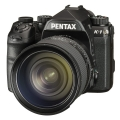
规格总览
产品类型
35mm画幅可换镜头数码相机
发布日期
2016-02-18
影像规格
影像传感器
CMOS
影像传感器尺寸
35.9×24.0mm
总像素
约3677万
有效像素
约3640万
影像处理器
PRIME IV
色彩空间
sRGB，AdobeRGB
静态图像尺寸
JPEG：L（36M:7360×4912）, M（22M:5760×3840）, S（12M:4224×2816）, XS（2M:1920×1280）RAW：（36M:7360×4912）
静态图像格式
JPEG, RAW（PEF／DNG）, DCF 2.0 兼容
静态图像质量
RAW(14bit):PEF，DNG JPEG:★★★(优良)，★★(良好)，★(好)，RAW与JPEG可同时记录
短片尺寸
Full HD (1920x1080， 60i/50i/30p/25p/24p)HD (1280x720， 60p/50p)
短片格式
MPEG4-AVC/H.264
防抖系统
影像感应器位移式 SR II(SR:Shake Reduction)
除尘系统
通过超声振动实现影像传感器清洁功能“DRII”及灰尘警告
镜头和对焦
镜头卡口
Pentax AF
兼容镜头
KAF3，KAF2(兼容电动变焦)，KAF，KA接环镜头
对焦系统类型
TTL相位差异自动对焦
对焦模式
单次AF(AF.S)，连续AF(AF.C)，自动选择AF (AF.A)
AF辅助灯
有
曝光控制
测光系统
采用8.6万像素RGB感应器的TTL开放光圈测光
测光模式
中央重点测光, 评价测光, 重点测光
测光范围
-3EV~20EV
曝光模式
绿色模式，程序，感光度优先，快门优先，光圈优先，快门与光圈优先，手动，长时间曝光，闪光灯同步速度，USER1，USER2，USER3，USER4，USER5
拍摄模式
静态照片单张，连拍，自拍，遥控器，曝光包围，反光镜锁定拍摄，多重曝光，间隔拍摄，间隔合成，间隔视频，星流拍摄影片遥控支架，间隔拍摄，间隔合成，间隔动画，自助计时和遥控并用可以操控星流拍摄
图像模式
鲜明，自然，人物，风景，风雅，波普风格，温暖，留银冲洗，反转片，单色，正负逆冲
创意滤镜
色彩提取，玩具照相机，怀旧，高对比度，明暗，反转颜色，高对比抽色，硬派单色
快门类型
电子控制，纵走式，焦平面快门
快门速度
自动:1/8000秒～30秒，手动:1/8000秒～30秒(1/3EV步长或1/2EV步长)，长时间曝光
闪光同步速度
1/200
曝光补偿
±5EV以1/3或1/2EV级调整
自动曝光锁
有
自动包围曝光
2张/3张/5张，可与自拍/遥控器一起使用
ISO感光度
ISO AUTO / 100～204800 (1EV步长，1/2EV步长或是1/3EV步长)
白平衡
自动白平衡，复合自动白平衡，日光，阴影，阴天，荧光灯(D:日光色，N:日光白色，W:冷白色，L:暖白色)，白炽灯，闪光灯，CTE，手动(最多可保存3种设定)，色温设定(最多可保存3种设定)，拍摄影像设定
连拍
H：约4.4张/秒，JPEG 70张，RAW 17张M：约3.0张/秒，JPEG 100张，RAW 20张L：约0.7张/秒，JPEG 100张，RAW 10张
闪光灯
闪光模式
自动, 强制闪光, P-TTL, 高速同步, 自动+红眼减轻 , 强制闪光+消减红眼, 低速同步+消减红眼, 后帘同步, 低速同步, 反差控制, 无线同步（使用支持的外置闪光灯）
闪光补偿
-2 至 +1EV
取景器/显示屏
取景器
五棱镜取景器
取景范围
100%
取景放大倍率
(50mmF1.4・∞)约0.70倍
屈光度调节范围
约-3.5～+1.2m-1
对焦屏
自然光亮磨砂对焦屏III
取景器信息
焦点，网格表示，电子水平仪，AF框架，点测光框架，切割
LCD类型
彩色TFT LCD
LCD尺寸
3.2英寸
LCD像素
约103.7万
LCD特性
翻转屏
亮度调节级数
户外显示屏：可调整±2亮度
Live View
有
Live View 显示
视野率约100%，放大显示(最大10倍)，网格线显示(16网格，黄金分割，刻度显示)，直方图显示，白斑警告，构图微调
Live View 对焦模式
对比度检测(脸部检测，追踪，多个自动对焦点，选择，重点)，对焦辅助(开启/关闭)
文件输入/输出
存储卡
SD/SDHC, SDXC
数据接口
USB3.0
视频/音频接口
D型HDMI接口
无线功能
Wi-Fi
电源
电池
充电式锂离子电池D-LI90P
续航能力
可拍摄张数约760张，重播时间约390分钟
外接电源
交流变压器套件K-AC132(选购件)
机身规格
材质
机身的前后及下部的外壳采用了轻量坚固的镁合金材质
颜色
黑色
尺寸
136.5×110×85.5mm
重量
仅机身约925g / 含电池和1张SD存储卡约1010g
其它
配件端口
热靴, 快门线, 耳机, 外接电源插孔, 麦克风输入端子, X同步插孔
支持语言
中文（简体）, 中文（繁体）, 英语, 日语, 捷克语, 丹麦语, 荷兰语, 芬兰语, 法语, 德语, 意大利语, 韩语, 波兰语, 葡萄牙语, 俄语, 西班牙语, 土耳其语, 匈牙利语, 瑞士语, 希腊语
备注
配备双SD卡槽
山山风2018-11-01 22:555 分
操作性 5.00功能性 5.00美观性 5.00趣味性 5.00耐用性 5.00性价比 5.00解像力 5.00色彩还原 5.00
chbkk2018-07-15 15:125 分
操作性 5.00功能性 5.00美观性 5.00趣味性 5.00耐用性 5.00性价比 5.00解像力 5.00色彩还原 5.00
骊泉居士2018-05-03 16:254.94 分
操作性 5.00功能性 5.00美观性 5.00趣味性 5.00耐用性 5.00性价比 4.50解像力 5.00色彩还原 5.00
匿名网友2018-03-01 14:194.94 分
操作性 5.00功能性 5.00美观性 5.00趣味性 5.00耐用性 5.00性价比 5.00解像力 4.50色彩还原 5.00
jeanwind2017-01-18 16:454.75 分
操作性 5.00功能性 5.00美观性 4.00趣味性 5.00耐用性 4.50性价比 5.00解像力 5.00色彩还原 4.50
rnb2016-06-03 23:384.94 分
操作性 5.00功能性 5.00美观性 4.50趣味性 5.00耐用性 5.00性价比 5.00解像力 5.00色彩还原 5.00
zhuoli992016-06-01 11:514.88 分
操作性 5.00功能性 4.00美观性 5.00趣味性 5.00耐用性 5.00性价比 5.00解像力 5.00色彩还原 5.00
产品图 / 样片
K-1
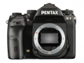
K-1
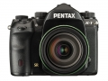
K-1
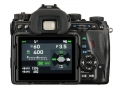
K-1
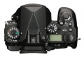
K-1
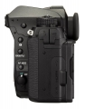
K-1
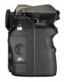
K-1
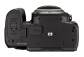
K-1
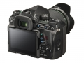
K-1
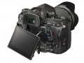
K-1
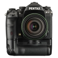
K-1
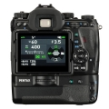
K-1
评测 / 相关文章
- 详细内容 （存档）
- 不负No.1 千年等一回 小测理光宾得旗舰单反K-1 （存档）
- ［试用］独乐不如共乐 宾得K1“首相”品机赏镜 （存档）
- ［资讯］整体稳定性提升 理光发布K-1新固件 （存档）
- ［试用］迟来的幸福 详评宾得全幅单反K-1 （存档）
- ［试用］宾得K1实拍样张赏析 （存档）
- ［试用］不只宾得K-1 那些年与我相伴的相机 （存档）
- ［试用］为K-1准备挂机头 东蔡CZJ 35-70改口 （存档）
- ［资讯］动态范围挑战中幅 DP公布K-1像素偏移测试 （存档）
- ［资讯］令人印象深刻 DP宾得K-1像素偏移初测 （存档）
- ［试用］守得云开见月明 宾得全画幅K-1试机 （存档）
相关文章
- ［试用］独乐不如共乐 宾得K1“首相”品机赏镜 （存档）
- ［资讯］整体稳定性提升 理光发布K-1新固件 （存档）
- ［试用］迟来的幸福 详评宾得全幅单反K-1 （存档）
- ［试用］宾得K1实拍样张赏析 （存档）
- ［试用］千年等一回 小测理光宾得旗舰单反K-1 （存档）
- ［试用］不只宾得K-1 那些年与我相伴的相机 （存档）
- ［试用］为K-1准备挂机头 东蔡CZJ 35-70改口 （存档）
- ［资讯］动态范围挑战中幅 DP公布K-1像素偏移测试 （存档）
- ［资讯］令人印象深刻 DP宾得K-1像素偏移初测 （存档）
- ［试用］守得云开见月明 宾得全画幅K-1试机 （存档）
- ［资讯］谁是长曝王 各家机型高ISO长曝控躁PK （存档）
- ［试用］五千里伊犁行 宾得K-1深度试用 （原站已下线）
- ［影像］不人像不摄影 宾得K-1拍正妹 （原站已下线）
- ［影像］宾得K-1与二公主和135/2.8人像试拍 （原站已下线）
- ［资讯］宾得K1 Ⅱ国内不发售 只可通过K-1付费升级 （原站已下线）
- ［资讯］理光提供K-1升级K-1II有偿服务 （原站已下线）
- ［试用］宾得K1随走随拍，记录生活 （原站已下线）
- ［资讯］宾得K-1荣获德国的设计奖 （原站已下线）
- ［资讯］外媒公布宾得相机动态范围性能 （原站已下线）
- ［资讯］理光正式发布特别银色款K-1 （原站已下线）
- ［试用］真的进步很大 宾得K-1初步体验报告 （原站已下线）
- ［试用］当小公主遇上全画幅K-1 （原站已下线）